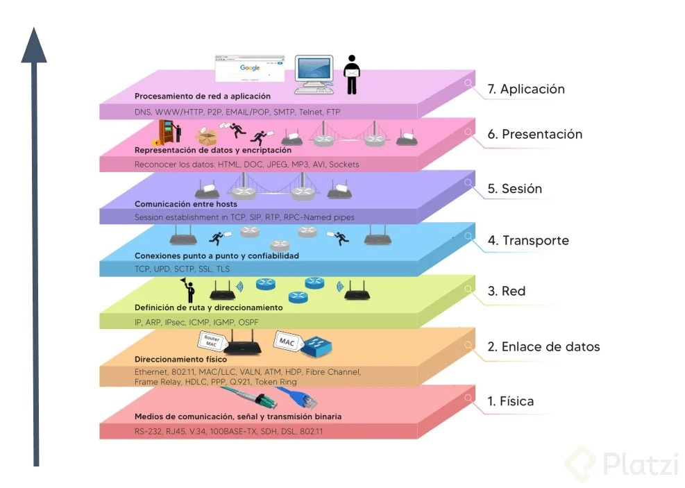

El modelo OSI (Open Systems Interconnection) es un marco conceptual que estandariza las funciones de una red de telecomunicaciones o de sistemas informáticos, dividiéndolas en siete capas. Cada capa tiene una función específica y se comunica únicamente con la capa inmediata superior e inferior, facilitando el diseño, la implementación y la interoperabilidad de las redes. Este modelo permite que diferentes sistemas y tecnologías trabajen juntos, asegurando una comunicación eficiente y estructurada.

A continuación, se presenta una tabla detallada de cada capa que conforma el modelo OSI, así como un ejemplo de cada una.
| Capas del Modelo OSI | Características | Ejemplo | |
| Física | Transmite los datos en forma de bits a través de cables, ondas, o luz. | El cable de red o la señal WiFi que conecta tu dispositivo. | |
| Enlace de Datos | Asegura que los datos se transmitan sin errores entre dispositivos conectados directamente. | Controla los datos que viajan en una red local, como en una oficina. | |
| Red | Determina la ruta que los datos seguirán para llegar a su destino. | Como el GPS elige la ruta óptima, esta capa usa direcciones IP para dirigir los datos. |  |
| Transporte | Asegura que los datos lleguen completos y en orden. | Similar a un servicio de mensajería que confirma que todas las partes de un paquete llegan juntas. | |
| Sesión | Establece y mantiene las conexiones de comunicación. | Es como el acto de contestar y mantener una llamada telefónica. | |
| Presentación | Traduce los datos al formato correcto, como encriptación o compresión. | Convierte los datos para que sean visibles como imágenes o texto. |  |
| Aplicación | Interactúa directamente con las aplicaciones del usuario, como navegadores o correos electrónicos. | La capa donde navegamos en Internet o usamos una app. | |